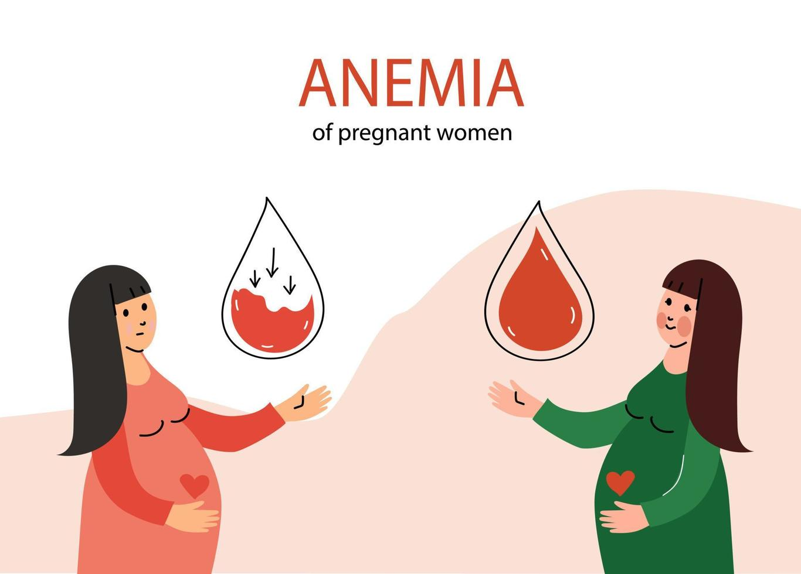

Indicadores FED2024-2025
INDICADOR SI_.01
FICHA SI-01.01: Porcentaje de gestantes con diagnóstico de anemia atendidas en establecimientos de salud del 1er y 2do nivel de atención del Gobierno Regional, que reciben dosaje de hemoglobina de control y segunda entrega de tratamiento con hierro
INDICADOR VI_01.01
Se muestra el Reporte por actividades para que cada profesional haga segumiento de sus atenciones y atendidos
INDICADOR VI_01.02
En este apartado podrás encontrar las normas y manuales actualizados